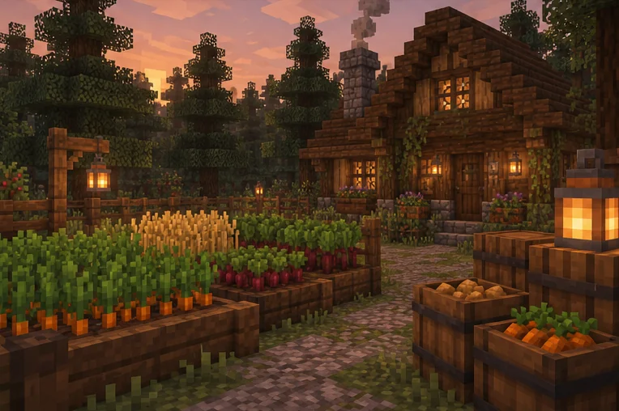

Construcción y tecnología
Enciende el taller
Pon una máquina a trabajar y haz que cada material encuentre su sitio.
Ver guía de producción →¿Qué se te antoja hacer hoy? Puedes encender el horno, tocar con tus amigos o salir a ver qué hay más allá del Canal. Elige una actividad y encuentra por dónde empezar.
Pon una máquina a trabajar y haz que cada material encuentre su sitio.
Ver guía de producción →
Junta a tus amigos, prepara el escenario y toca algo que se quede en la memoria del grupo.
Ver guía de música →
De la cosecha a la cantina, prepara un menú para recibir a quien vuelva a casa.
Ver guía de cocina →
Prepara un rincón en el refugio y llévate a un nuevo compañero de vuelta a casa.
Ver guía de mascotas →
Busca un valle sin cartografiar y deja en el mapa una ruta que otros puedan seguir.
Ver guía de exploración →Cultiva, cocina para el grupo y abre tu propio puesto.
7 guías →Construcción y tecnologíaLevanta una casa o pon a trabajar tu primer taller.
4 guías →CulturaToca con tus amigos y monta una galería.
5 guías →MascotasDale un hogar a un zorro o a tu compañero favorito.
3 guías →MosslornHaz equipo y prepara el Canal para recibir a más gente.
5 guías →Clima y estacionesSiembra a tiempo y lee las señales del cielo.
4 guías →ExpedicionesDescubre cuevas y ruinas. Deja una ruta para quien siga.
10 guías →MovilidadMueve suministros por tierra, agua o aire.
4 guías →SupervivenciaPrepara curas y un campamento para pasar la noche.
5 guías →CombateEntrena en equipo y defiende a tus vecinos.
3 guías →BestiarioConoce las criaturas que acechan entre los abetos.
4 guías →Herramientas y servidorAcomoda tus controles, recetas y servidor.
2 guías →Monta una cocina a la que la gente vuelva incluso cuando ya llenó el inventario.
Abrir wiki rápida →Que cualquiera encuentre lo que necesita y sepa dónde devolverlo al regresar.
Abrir wiki rápida →Abre un puesto que tenga algo propio que ofrecer, desde comida hasta muebles.
Abrir wiki rápida →Una buena base se nota el día en que todos regresan cargados a la vez.
Abrir wiki rápida →Levanta una máquina que haga un trabajo concreto para la comunidad.
Abrir wiki rápida →Pon en circulación lo que disfrutas producir: pan, faroles, muebles o materiales para el taller.
Abrir wiki rápida →Haz un plato que solo tenga sentido en esa época de tu huerto y compártelo en la cantina.
Abrir wiki rápida →Empieza por una esquina de prueba y descubre qué combinación se siente parte de Zona Cero.
Abrir wiki rápida →Construye un lugar que sugiera quién vive allí y qué hace cada día.
Abrir wiki rápida →Automatiza un trabajo repetido para que el equipo pueda dedicarle tiempo a otros proyectos.
Abrir wiki rápida →Haz que quien entra al taller pueda saber qué funciona y dónde se encuentra cada cosa.
Abrir wiki rápida →Haz una foto que ayude a alguien a reconocer exactamente dónde estuvo tu equipo.
Abrir wiki rápida →Dale al refugio un lugar donde quedarse después de guardar las herramientas.
Abrir wiki rápida →Cada salida deja algo que vale la pena conservar, incluso si vuelves con las manos vacías.
Abrir wiki rápida →Reúne a tus amigos en el refugio para tocar algo que se vuelva parte del lugar.
Abrir wiki rápida →Dale una pared a quien hace fotos, otra a quien ilustra y un sitio de encuentro a quienes pasan por el refugio.
Abrir wiki rápida →Dale un hogar a tu primer compañero y averigua qué necesita para sentirse en casa.
Abrir wiki rápida →Haz que tu compañero sepa dónde quedarse, dónde seguirte y a dónde volver.
Abrir wiki rápida →Prepara a tu compañero para una salida y dale un punto de reunión para el regreso.
Abrir wiki rápida →Tu primera noche empieza en el Canal. Deja una señal para que el siguiente en llegar encuentre casa.
Abrir wiki rápida →En Mosslorn, un baño, una cocina y una oficina cuentan historias distintas. Decide qué vienes a buscar.
Abrir wiki rápida →Una buena patrulla se nota cuando alguien se separa y todos saben cómo volver a reunirse.
Abrir wiki rápida →Reúne a personas con planes distintos y haz que todos tengan un motivo para estar en el refugio.
Abrir wiki rápida →Una cantina, un taller y una patrulla pueden sostenerse entre sí si queda claro qué necesita cada uno.
Abrir wiki rápida →Lee el cielo desde una ruta corta antes de cruzar terreno abierto con el grupo.
Abrir wiki rápida →Siembra pensando en lo que se va a comer cuando cambie el clima.
Abrir wiki rápida →Que la primera Luna de Sangre te encuentre con un plan y un lugar iluminado.
Abrir wiki rápida →Si el cielo deja un cráter, regístralo como un hallazgo de campo.
Abrir wiki rápida →Baja por tu primera muestra de neodimio. El Magnetron puede esperar a que conozcas el camino.
Abrir wiki rápida →Abre el portal del refugio y vuelve con algo que solo crezca o se forme del otro lado.
Abrir wiki rápida →El barco sigue atrapado en el hielo. Lleva calor suficiente para volver con la historia completa.
Abrir wiki rápida →Gana un punto de apoyo en el Nether antes de lanzarte a recorrer sus fortalezas.
Abrir wiki rápida →Haz de tu primera visita una prueba corta y vuelve con la ruta para el siguiente grupo.
Abrir wiki rápida →Une dos ruinas con un camino que otra patrulla pueda seguir.
Abrir wiki rápida →Encuentra una rareza, regístrala y vuelve con un relato que el resto pueda comprobar.
Abrir wiki rápida →Ese valle sin cartografiar puede ser tu próximo paso de montaña o el lugar donde levantar una casa.
Abrir wiki rápida →Dibuja una ruta por las islas antes de perseguir la primera estructura que aparezca.
Abrir wiki rápida →El cofre de una ruina merece tanta atención como el pasillo que lleva hasta él.
Abrir wiki rápida →Convierte una altura incómoda en un atajo que puedas repetir con el equipo puesto.
Abrir wiki rápida →Haz que la primera carga llegue entera. Una vuelta corta vale más que una caravana atascada lejos.
Abrir wiki rápida →Diseña una ida que también tenga vuelta, incluso si alguien se queda atrás.
Abrir wiki rápida →Cada ruta pide su propio vehículo. Pon a prueba el tuyo con un tramo que conozcas bien.
Abrir wiki rápida →Planea el rescate antes de que alguien caiga. Así la patrulla puede concentrarse en volver.
Abrir wiki rápida →Ajusta tu ropa y tu cantimplora para que la temperatura no decida cuánto dura tu salida.
Abrir wiki rápida →Cuando baja la luz, tu prueba es volver con todos y conservar el camino para mañana.
Abrir wiki rápida →Haz un puesto de descanso al que te dé gusto volver cuando te alcance la noche.
Abrir wiki rápida →Cuando el entorno empieza a volverse extraño, observa qué cambió y apúntalo para la siguiente salida.
Abrir wiki rápida →Una aldea defendida en equipo se gana antes de que llegue el primer saqueador.
Abrir wiki rápida →Arma un conjunto pensado para tu función en el grupo y ensáyalo cerca del refugio.
Abrir wiki rápida →Prepara el refugio para la noche en que mantener la puerta abierta deje de ser buena idea.
Abrir wiki rápida →Si oyes el aviso y ves dos ojos en la oscuridad, ya tienes una historia que contar al volver.
Abrir wiki rápida →La calabaza rodeada de velas puede esperar. Vuelve cuando el equipo esté listo para sus cambios de fase.
Abrir wiki rápida →A veces esa figura al otro lado del bosque parece un amigo. Compruébalo antes de seguirla.
Abrir wiki rápida →Ponle nombre a lo que se mueve entre las lápidas antes de entrar por el botín.
Abrir wiki rápida →Deja tus herramientas a mano para que el pack enorme se sienta manejable en la primera sesión.
Abrir wiki rápida →Prepara el terreno antes de que llegue todo el grupo y registra qué pasa cuando juega junto.
Abrir wiki rápida →